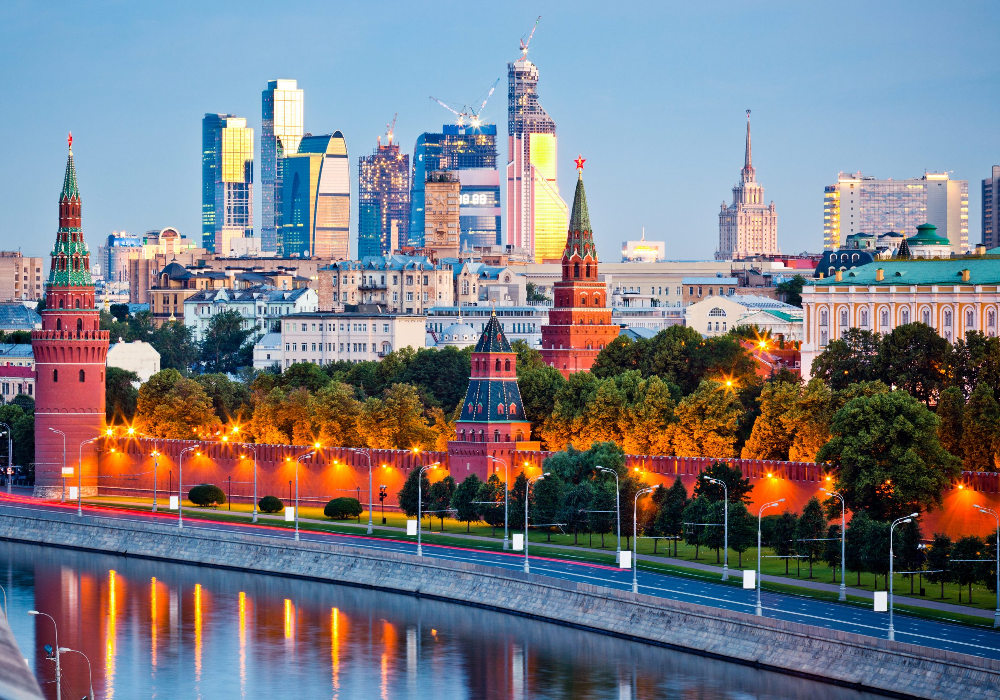

Москва
ㅤПодвиг Москвы как города-героя и её вклад во Вторую мировую войну
ㅤㅤМосква — столица России, город-герой, который сыграл ключевую роль в ходе Великой Отечественной войны (1941–1945). Её защита стала символом мужества, стойкости и героизма советского народа. Подвиг Москвы заключается не только в успешной обороне от немецко-фашистских войск, но и в значительном вкладе в победу над нацизмом.
ㅤㅤИсторическая справка: Битва за Москву
ㅤБитва за Москву (30 сентября 1941 — 20 апреля 1942) была одной из крупнейших сражений Великой Отечественной войны. Она состояла из двух этапов:
ㅤㅤ1.ㅤОборонительный этап (сентябрь–декабрь 1941 года):
ㅤ•ㅤНемецкие войска под командованием генерала Гудериана начали наступление на Москву в рамках операции "Тайфун". Их цель заключалась в том, чтобы захватить столицу СССР до зимы.
ㅤ•ㅤК октябрю 1941 года немецкие войска подошли к самому городу, заняв такие населённые пункты, как Можайск, Волоколамск и Красная Поляна. Однако наступление замедлилось из-за упорного сопротивления советских войск и непогоды.
ㅤㅤ2.ㅤКонтрнаступление (декабрь 1941 – апрель 1942 года):ㅤ
ㅤ•ㅤ5 декабря 1941 года советские войска под командованием Георгия Жукова перешли в контрнаступление. Это стало первым масштабным поражением вермахта в войне.
ㅤ•ㅤВ результате сражения немецкие войска были отброшены на расстояние до 250 километров от Москвы.
ㅤПодвиг защитников Москвы
ㅤЗащита Москвы — это пример беспримерного героизма и самоотверженности, где важную роль сыграло участие мирного населения. Жители города строили оборонительные рубежи, рыли окопы и устанавливали противотанковые заграждения, а многие вступили в народное ополчение. Советские войска проявили невероятное мужество в боях за Москву, особенно знаменитая 316-я стрелковая дивизия под командованием генерала Ивана Панфилова, прославившаяся своими подвигами в районе Волоколамска.
ㅤПо легенде, 28 панфиловцев ценой своей жизни уничтожили 18 немецких танков, став символом героизма. Женщины Москвы также внесли огромный вклад в оборону города, работая в госпиталях, на заводах и участвуя в строительстве оборонительных сооружений.
ㅤВклад Москвы в победу во Второй мировой войне
ㅤМосква не только выдержала осаду, но и стала важнейшим центром управления страной и координации военных действий. Она оставалась политическим и административным центром СССР, где принимались ключевые решения и планировались военные операции
ㅤПромышленность города сыграла огромную роль в обеспечении фронта, выпуская оружие, боеприпасы и технику, а во время эвакуации многие предприятия были перевезены на восток страны, где продолжили работу в тылу. Москва также стала символом сопротивления, особенно благодаря параду на Красной площади 7 ноября 1941 года, который стал мощным моральным стимулом для всей страны.
ㅤПамять о подвиге Москвы
ㅤПодвиг защитников Москвы увековечен в памятниках, музеях и праздниках. Музей обороны Москвы расположен в парке Победы на Поклонной горе, где представлены экспонаты, рассказывающие о битве за город. Памятник героям Панфиловцев установлен в Подмосковье недалеко от места их героической гибели, а 9 мая 1945 года на Красной площади состоялся исторический парад, посвящённый победе над фашизмом.
ㅤМосква как город-герой сыграла колоссальную роль в победе над нацизмом, а её защита стала символом мужества и стойкости всего советского народа. Подвиг защитников города навсегда останется в истории как пример того, как люди могут объединиться ради общей цели и спасти свою Родину от угрозы.